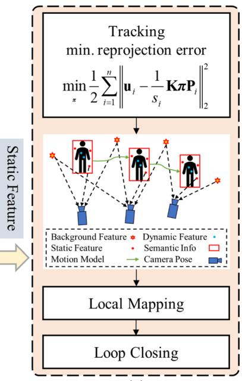
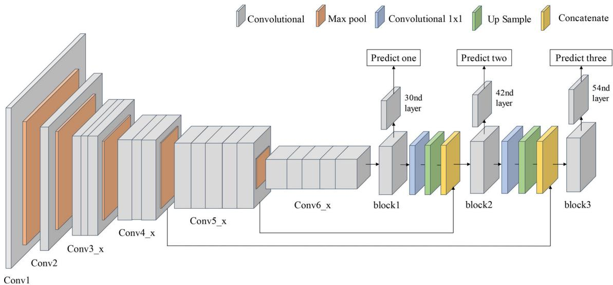
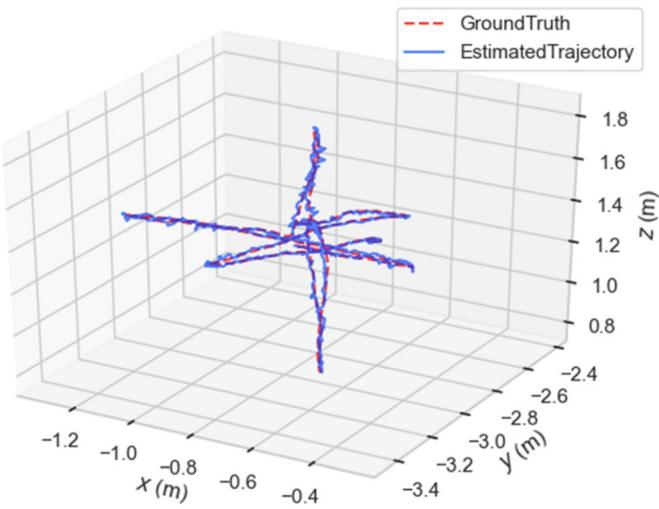

本节目标
读完你应能：① 说清 YOLO-SLAM 的「轻」体现在哪（Darknet19-YOLOv3 仅检测「人」、无 GPU 可跑）；② 讲出它的五线程紧耦合架构与深度-RANSAC 动态特征筛选；③ 理解它「只滤动态点、不建物体模型」的取舍；④ 用 ATE 数字说明它相对 ORB-SLAM2 / DS-SLAM 的提升与局限。
和前面课程怎么接
0153–0156 的动态 SLAM 大多靠「分割网络 + GPU」；本课是动态块思路在语义块的回响——用语义当「动态区域定位器」，但极简：只检测人这一类。它直接站在 ORB-SLAM2（第三季 0043–0045）肩上，沿用其稀疏特征点地图。0161 说过「建物体模型比只滤点贵得多」——本课正是这句话的工程印证：只删点、不建模型，所以能在无 GPU 笔记本上跑。
1. 最容易被复现的「轻量派」
语义建图块前几篇（0159–0163）要么稠密重建、要么建 DSG，算力需求都不小。YOLO-SLAM（2022）走了一条极简工程路线：它不改 SLAM 内核，而是在 ORB-SLAM2 外面加两层「动态剔除」——一层用轻量 YOLO 检测「人」，一层用深度-RANSAC 把人框里的特征点删掉，最后只用剩下的静态点估位姿。
它不重建稠密语义地图、不参数化任何物体——语义在这里的唯一用途，就是「圈出哪里是动态的，然后把那块点删了」。所以它能跑在 Intel i5 无 GPU 笔记本上，这是它最大的卖点，也是「最容易复现」的原因：网络小、只检测一类、不建模型。
2. 五线程紧耦合架构
整个系统被拆成五个并行线程：① 检测线程（跑 YOLO）；② 动态特征筛选线程（深度-RANSAC）；③ 追踪线程；④ 局部建图线程；⑤ 回环线程。检测和筛选的结果实时喂给追踪/建图，让位姿估计只用静态点。
怎么看这张图：① 语义（检测）和几何（SLAM）是「紧耦合」并行，不是后处理；② 所有动态剔除都发生在喂给内核之前；③ 这体现了「只滤点、不建模型」的轻量哲学。
要记住的一句话：YOLO-SLAM = ORB-SLAM2 + 一个轻量「找人 + 删点」的外挂。

怎么看这张图：这是 YOLO-SLAM 的总框架图，分成检测线程（a）、动态特征筛选线程（b）和 SLAM 主体（c）三块。它和上面自绘的五线程流水线一致——确认了「检测 + 筛选 + SLAM 内核」的紧耦合结构。
3. 轻量检测器：Darknet19-YOLOv3，只检测「人」
它把常用的 YOLOv3 骨干从 Darknet-53 换成更轻的 Darknet-19（Top-1 约 74.1、权重仅 80 MB、理论 171 FPS），并把检测类别数压到 C=1——只检测「人」。输入 416×416，在 PASCAL VOC 2007/2012 上训练。因为只找「人」这一动态类，网络极小、推理快，这正是它能在无 GPU 笔记本上跑的前提。

怎么看这张图：这张图展示「删动态点」的过程：先检测预定义为动态的「人」、对整张 RGB 提 ORB 特征，再用几何方法（深度-RANSAC）把人框内的特征点剔除，剩下静态点进入 SLAM。它把「语义定位动态区 → 几何删点」两步合起来，是本课核心机制的可视化。
4. 深度-RANSAC：框内特征用深度判动 / 静
检测出「人」的框后，框里的 ORB 特征点未必都该删——需要判断。YOLO-SLAM 用深度-RANSAC：对框内特征点的深度做统计，用深度方差 $$s^2 = \frac{1}{N}\sum_{i=1}^{N}(x_i - \bar{x})^2$$ 衡量这块区域的深度一致性；动态的人所在区域深度分布和静态背景不一致，被判定为非静态而剔除。方差阈值 nThre = 0.43（在 TUM 数据集上调得），迭代次数由内点比例自适应决定。
这句话在说什么：公式算的是「这块区域里各个特征点深度离平均差多远」。$s^2$ 大说明深度乱、可能是动态物体边缘；$s^2$ 超过 0.43 就把这些点当动态删掉，只留 $s^2$ 小的静态点去估位姿。本质上就是用「深度一致性」当动态判据，和 0153 起动态块的几何残差思路同源。
怎么看这张图：① 动态判定完全靠「框内深度一致性」，不靠类别语义本身；② 阈值 0.43 是 TUM 上调出的经验值；③ 这与 0153 动态块的「几何残差判动」是同一族思想，只是触发区由检测框限定。
要记住的一句话：YOLO-SLAM 的「动态」= 检测框定位 + 框内深度方差超阈值的点被删。
5. 为什么「只滤点」比「建物体模型」省得多
回头看 0161：MID/EM-Fusion 要做「对象级重建」，得每个物体一份体素模型 + 关联 + 配准，必须 GPU、且 Mask R-CNN 频率是瓶颈。YOLO-SLAM 反其道而行——它根本不建物体模型，只是把人框里的特征点删掉。这意味着：① 不需要实例分割（只检测框）；② 不需要物体追踪/配准；③ 主干还是 ORB-SLAM2 那套稀疏点，CPU 就能跑。
这正是本季反复出现的一句话的印证：「建物体模型」比「只滤动态点」贵得多。YOLO-SLAM 用「放弃物体模型」换来了「无 GPU 可复现」，是一种清醒的工程权衡，不是能力更强。
互动判断
YOLO-SLAM 能在无 GPU 笔记本上跑，主要靠下面哪点？
怎么看这张图：① 左边看那个虚线框——框内红点被划掉，就是「整批丢弃」，简单粗暴；② 右边看椅子和外面的椭球，以及旁边「融合 / 关联」的回环：这是每帧都要重复的计算；③ 比较两组小字的代价栏：左边能「无需 GPU」，右边只能做到 2–5 Hz、通常要显卡；④ 关键结论在最下面那句——两者的差别不在效果好坏，而在你的下游任务要不要「知道那是什么」。
要记住的一句话：「建物体模型」比「只滤动态点」贵得多，但这个贵是买来的能力——前者能回答「那是什么、在哪、多大」，后者只能回答「这块丢掉」。
6. 数字与局限
在 TUM 上，相对 ORB-SLAM2 的 ATE RMSE 提升惊人：fr3_walking_static 0.0073 m（ORB 0.3900，降 98.13%）、fr3_walking_xyz 降 98.06%、fr3_walking_half 降 94.18%、fr3_sitting_static 降 24.14%；相对 DS-SLAM，fr3_walking_rpy 从 0.4442 降到 0.2164（降 51.28%）。
局限也明显：① 只识别「人」一类动态，对移动的车、动物无能为力；② 在 45° 旋转场景（fr3_walking_rpy）检测弱于分割类方法 RDS-SLAM——因为纯检测框对大姿态变化不鲁棒。它没有给系统 FPS，但强调「比 SegNet / Mask R-CNN 省时」。

怎么看这张图：这张图把 YOLO-SLAM 和原始 ORB-SLAM2 的 ATE / RPE 误差并排对比——肉眼可见 YOLO-SLAM 的误差曲线（尤其 walking 序列）比 ORB-SLAM2 贴近真值很多。它直观支撑了上面「降 98%」的数字。
互动判断
YOLO-SLAM 相对 ORB-SLAM2 在 fr3_walking_static 上 ATE 从 0.3900 m 降到 0.0073 m，这主要归功于？
读完你应该能回答
- YOLO-SLAM 的「轻」体现在哪三点？为什么它能在无 GPU 笔记本上跑？
- 它的五线程架构里，检测和动态筛选分别做什么？最终喂给 SLAM 内核的是什么点？
- 深度-RANSAC 用什么统计量判动态？阈值 nThre 是多少？
- 为什么「只滤动态点、不建物体模型」能省下 GPU？（回链 0161）
- YOLO-SLAM 在 fr3_walking_static 上相对 ORB-SLAM2 的 ATE 提升是多少？它的两个主要局限是什么？